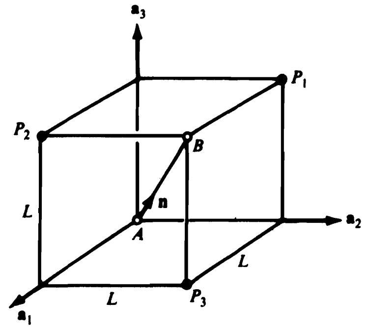
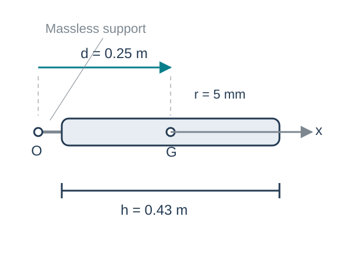

Mass Distribution
Kinematics and Machine Dynamics · Chapter 8
Chapter overview
- Mass centers of particles and continuous bodies
- Inertia vectors, scalars, and matrices
- Changes of basis and parallel axes
- Principal axes and principal moments
Goal: describe a rigid body’s mass distribution about a stated point and in a stated basis.
Source: Satici, Kinematics and Machine Dynamics, Fall 2020 compiled notes, Chapter 8, §§8.1–8.7, pp. 51–57.
Why the mass distribution matters
Two bodies can have the same mass and respond differently to the same torque.
Mass far from a rotation axis contributes more strongly to the moment of inertia:
\[I=\sum_i m_i d_i^2.\]
For a rigid body, the mass, mass-center location, and central inertia matrix supply the mass properties needed for Newton–Euler equations.
Source: Satici, Kinematics and Machine Dynamics, Fall 2020 compiled notes, Chapter 8 introduction and §8.3, pp. 51–53.
The mass center of particles
Let \(p_i\) locate particle \(i\) from an arbitrary origin \(O\), and let \(m=\sum_i m_i>0\).
\[\boxed{p_G=\frac{1}{m}\sum_i m_i p_i.}\]
Relative to the mass center \(G\), \(r_i=p_i-p_G\), so
\[\sum_i m_i r_i=\sum_i m_i p_i-mp_G=0.\]
The mass-weighted position vectors balance about \(G\).
Source: Satici, Kinematics and Machine Dynamics, Fall 2020 compiled notes, §8.1, Eq. (8.1), p. 51. G replaces S* for consistency with later dynamics slides.
Worked example: particles on a cube

The cube has side length \(L\). The masses at \(P_1,P_2,P_3\) are \(m,2m,\mu\).
\[p_G=\frac{L\left[(2m+\mu)a_1+(m+\mu)a_2+3ma_3\right]}{3m+\mu}.\]
The unit direction of diagonal \(AB\) is
\[n=\frac{a_1+a_2+a_3}{\sqrt3}.\]
Source: Satici, Kinematics and Machine Dynamics, Fall 2020 compiled notes, §8.1. Example and unchanged cube figure from Lectures/Lecture05/slides/com.tex and figures/cube.png. The figure is in the source lecture; no independent artwork credit is provided.
Distance from the mass center to the diagonal
The perpendicular distance is \(D=\|p_G\times n\|\).
With \(u=\mu/m\geq0\),
\[D^2=\frac{2L^2}{3}\frac{u^2-3u+3}{(u+3)^2},\qquad \frac{dD^2}{du}=\frac{2L^2(3u-5)}{(u+3)^3}.\]
The derivative changes from negative to positive at \(u=5/3\):
\[\boxed{\mu=\frac53m,\qquad D_{\min}=\frac{L}{\sqrt{42}}.}\]
Source: Satici, Kinematics and Machine Dynamics, Fall 2020 compiled notes, §8.1. Lecture05 mass-center example, with the optimization completed for the lecture deck.
Curves, surfaces, and solids
For a continuous body,
\[\boxed{m=\int_B dm,\qquad p_G=\frac1m\int_B p\,dm.}\]
| Model | Mass element | Density units |
|---|---|---|
| Slender wire | \(dm=\lambda\,ds\) | kg/m |
| Thin plate | \(dm=\sigma\,dA\) | kg/m² |
| Solid | \(dm=\rho\,dV\) | kg/m³ |
For uniform density, the mass center coincides with the geometric centroid.
Source: Satici, Kinematics and Machine Dynamics, Fall 2020 compiled notes, §8.2, Eq. (8.2), pp. 51–52. Separate density symbols make their units explicit.
Worked example: a nonuniform rod
A rod occupies \(0\leq x\leq L\), with linear density \(\lambda(x)=\lambda_0(1+x/L)\).
\[m=\int_0^L\lambda_0(1+x/L)\,dx=\frac32\lambda_0L.\]
\[x_G=\frac{\int_0^L x\lambda_0(1+x/L)\,dx}{m} =\frac{(5/6)\lambda_0L^2}{(3/2)\lambda_0L} =\boxed{\frac59L}.\]
The heavier end shifts the mass center beyond the midpoint.
Source: Satici, Kinematics and Machine Dynamics, Fall 2020 compiled notes, §8.2. Original integration example added.
Composite bodies and cutouts
For components with known masses \(m_j\) and mass centers \(p_{G_j}\),
\[p_G=\frac{\sum_j m_jp_{G_j}}{\sum_jm_j}.\]
A cutout can be treated algebraically as a removed mass with a negative sign.
For a 6 kg plate centered at \(x=0.30\) m, with a 1 kg cutout centered at \(x=0.50\) m,
\[x_G=\frac{6(0.30)-1(0.50)}{6-1}=\boxed{0.26\ \mathrm m}.\]
Source: Satici, Kinematics and Machine Dynamics, Fall 2020 compiled notes, §8.2, p. 52. Original one-coordinate composite example. Negative mass is a subtraction device, not a physical material.
Inertia as a vector-valued operation
Choose a point \(O\) and a unit vector \(n\). If \(p\) runs from \(O\) to a mass element,
\[\boxed{\mathcal I_O(n)=\int_B p\times(n\times p)\,dm.}\]
The triple-product identity gives
\[p\times(n\times p)=\left[(p^Tp)\mathbf1-pp^T\right]n.\]
The inertia vector is linear in \(n\), but it need not point along \(n\).
Source: Satici, Kinematics and Machine Dynamics, Fall 2020 compiled notes, §8.3, Eqs. (8.3), (8.5), pp. 52–53. Here bold 1 is the identity tensor.
Inertia scalars and the radius of gyration
For unit directions \(n_a,n_b\),
\[I_{ab}=n_b\cdot\mathcal I_O(n_a) =\int_B(p\times n_a)\cdot(p\times n_b)\,dm=I_{ba}.\]
For one axis through \(O\),
\[\boxed{I_{aa}=\int_B d_\perp^2\,dm=mk_a^2,\qquad k_a=\sqrt{I_{aa}/m}.}\]
\(I_{aa}\) has units kg·m². The radius of gyration \(k_a\) is a length.
Source: Satici, Kinematics and Machine Dynamics, Fall 2020 compiled notes, §8.3, Eqs. (8.4), (8.6), (8.7), pp. 52–53. Eq. (8.6) has an extraneous p in the PDF integrand, removed here by the vector identity.
Three orthogonal directions are enough
In an orthonormal basis \(e_1,e_2,e_3\), write \(n_a=\sum_j a_je_j\).
\[\mathcal I_O(n_a)=\sum_{j=1}^3 a_j\mathcal I_O(e_j).\]
If \(n_b=\sum_k b_ke_k\),
\[\boxed{I_{ab}=\sum_{j,k}a_jI_{jk}b_k=a^TI_Ob.}\]
Symmetry leaves six independent inertia scalars.
Source: Satici, Kinematics and Machine Dynamics, Fall 2020 compiled notes, §8.4, Eqs. (8.8)–(8.10), pp. 53–54. Coordinate vectors are columns in this deck.
The inertia matrix in Cartesian coordinates
For \(p=(x,y,z)^T\) measured from \(O\),
\[\boxed{I_O=\int_B \begin{bmatrix} y^2+z^2&-xy&-xz\\ -xy&x^2+z^2&-yz\\ -xz&-yz&x^2+y^2 \end{bmatrix}dm.}\]
The off-diagonal entries use the negative integral convention, for example \(I_{xy}=-\int xy\,dm\).
Always specify both the reference point and the coordinate basis.
Source: Satici, Kinematics and Machine Dynamics, Fall 2020 compiled notes, §8.5, Eq. (8.11), p. 54. Cartesian form derived from §8.3; some statics references define products of inertia with the opposite sign.
Properties of a physical inertia matrix
\[I_O=I_O^T,\qquad n^TI_On=\int_B\|p\times n\|^2dm\geq0.\]
Thus its eigenvalues are real and nonnegative.
The moment about a unit direction \(n\) is \(n^TI_On\). A zero moment is possible for an ideal line of mass lying entirely on that axis.
For a planar lamina in \(z=0\),
\[I_{zz}=I_{xx}+I_{yy}.\]
Source: Satici, Kinematics and Machine Dynamics, Fall 2020 compiled notes, §§8.3–8.7. Properties and perpendicular-axis relation derived from the defining integrals.
Worked example: a uniform slender rod
A rod of length \(L\) and mass \(m\) lies along \(x\), centered at \(G\).
\[I_{G,zz}=\int_{-L/2}^{L/2}x^2\frac mL\,dx=\frac{mL^2}{12}.\]
By symmetry,
\[\boxed{I_G=\operatorname{diag}\left(0,\frac{mL^2}{12},\frac{mL^2}{12}\right).}\]
The ideal slender-rod model neglects radius, so the axial moment is zero.
Source: Satici, Kinematics and Machine Dynamics, Fall 2020 compiled notes, §§8.2–8.5. Original worked integration example.
The same inertia in another basis
Let \(R\) map body coordinates into reference coordinates: \(p_A=Rp_B\).
\[\boxed{I_O^A=R I_O^B R^T.}\]
The point \(O\) stays the same. Only the coordinate basis changes.
For any angular velocity,
\[\omega_A^TI_O^A\omega_A=\omega_B^TI_O^B\omega_B.\]
The quadratic form does not depend on the chosen coordinate basis.
Source: Satici, Kinematics and Machine Dynamics, Fall 2020 compiled notes, §8.5, p. 54, and Lecture05/slides/inertia.tex. Explicit basis transformation and quadratic-form check added.
Parallel-axis theorem: matrix form
Let \(c=\overrightarrow{OG}\) and use the same basis for both matrices.
\[\boxed{I_O=I_G+m\left[(c^Tc)\mathbf1-cc^T\right]=I_G-m\widehat c^{\,2}.}\]
Here \(\widehat c\,x=c\times x\).
Writing \(p=c+r\), the mixed terms vanish because \(\int_Br\,dm=0\).
The shift is measured from the mass center. An arbitrary shift between two noncentral points needs both offsets from \(G\).
Source: Satici, Kinematics and Machine Dynamics, Fall 2020 compiled notes, §8.6, Eqs. (8.13)–(8.14), p. 55. Explicit matrix derivation added.
Parallel axes: scalar form
For parallel axes with unit direction \(n\), one through \(G\) and one through \(O\),
\[I_{O,nn}=I_{G,nn}+m\left(\|c\|^2-(n\cdot c)^2\right).\]
If \(d\) is their perpendicular separation,
\[\boxed{I_O=I_G+md^2.}\]
For a slender rod about an end, perpendicular to the rod,
\[I_O=\frac{mL^2}{12}+m\left(\frac L2\right)^2=\frac{mL^2}{3}.\]
Source: Satici, Kinematics and Machine Dynamics, Fall 2020 compiled notes, §8.6, p. 55. Rod example added.
Worked example: a cylindrical pendulum

Uniform cylinder: \(m=0.4\) kg, \(h=0.43\) m, \(r=0.005\) m.
The pivot-to-center distance is \(d=0.25\) m along body axis \(x\).
\[I_{G,xx}=\tfrac12mr^2,\] \[I_{G,yy}=I_{G,zz}=\tfrac{m}{12}(3r^2+h^2).\]
The short support extension has negligible mass.
Source: Satici, Kinematics and Machine Dynamics, Fall 2020 compiled notes, §§8.5–8.6 and Lecture05/slides/inertia.tex. Original schematic clarifies that d exceeds h/2, requiring an offset support.
Pendulum: central and pivot inertias
The central inertia is
\[I_G=\operatorname{diag}(0.000005,\ 0.00616583,\ 0.00616583)\ \mathrm{kg\,m^2}.\]
With \(c=(d,0,0)^T\), the shift adds \(md^2=0.025\) kg·m² to \(I_{yy}\) and \(I_{zz}\):
\[\boxed{I_O=\operatorname{diag}(0.000005,\ 0.03116583,\ 0.03116583)\ \mathrm{kg\,m^2}.}\]
A shift along the cylinder axis leaves its axial moment unchanged.
Source: Satici, Kinematics and Machine Dynamics, Fall 2020 compiled notes, §8.6 and Lecture05 inertia example. Numerical values recomputed without intermediate rounding.
Pendulum: rotation of the coordinate basis
For \(R=R_z(\theta)\) and \(I_O^B=\operatorname{diag}(I_1,I_2,I_3)\),
\[I_O^A=\begin{bmatrix} I_1c^2+I_2s^2&(I_1-I_2)cs&0\\ (I_1-I_2)cs&I_1s^2+I_2c^2&0\\ 0&0&I_3 \end{bmatrix},\quad c=\cos\theta,\ s=\sin\theta.\]
At \(\theta=30^\circ\),
\[I_O^A\approx\begin{bmatrix} 0.007795&-0.013493&0\\ -0.013493&0.023376&0\\ 0&0&0.031166 \end{bmatrix}\ \mathrm{kg\,m^2}.\]
Source: Satici, Kinematics and Machine Dynamics, Fall 2020 compiled notes, §8.5 and Lecture05 inertia example. Frame convention stated explicitly.
Principal axes and principal moments
A principal direction \(n\) satisfies
\[\boxed{I_On=\lambda n,\qquad \|n\|=1.}\]
The moment \(\lambda\) is an eigenvalue of \(I_O\). Its eigenvector gives the axis direction through \(O\).
Because \(I_O\) is symmetric, an orthonormal principal basis exists:
\[Q^TI_OQ=\operatorname{diag}(\lambda_1,\lambda_2,\lambda_3).\]
Through \(G\), these are central principal axes.
Source: Satici, Kinematics and Machine Dynamics, Fall 2020 compiled notes, §8.7, Eqs. (8.15)–(8.16), pp. 55–56.
Symmetry and repeated principal moments
A plane of mass symmetry makes the products involving its normal vanish, so its normal is a principal direction.
If two principal moments are equal, any orthonormal pair in that eigenspace is valid.
If \(I_O=\lambda\mathbf1\), every direction through \(O\) is principal.
Equal diagonal entries alone do not guarantee repeated eigenvalues. The corresponding off-diagonal product must also vanish.
Source: Satici, Kinematics and Machine Dynamics, Fall 2020 compiled notes, §8.7, pp. 56–57. Corrects the final statement on p. 57: Iaa=Ibb alone is insufficient if Iab is nonzero.
Principal axes in a known principal plane
For the symmetric in-plane block \(\begin{bmatrix}A&B\\B&D\end{bmatrix}\),
\[\boxed{\lambda_\pm=\frac{A+D}{2}\pm\sqrt{\left(\frac{A-D}{2}\right)^2+B^2}.}\]
A principal-axis angle satisfies
\[2\theta=\operatorname{atan2}(2B,A-D),\]
with the other axis perpendicular to it. This form also handles \(A=D\) when \(B\ne0\).
Source: Satici, Kinematics and Machine Dynamics, Fall 2020 compiled notes, §8.7, p. 57. atan2 replaces the ambiguous tangent-only formula. For A=D and B=0, every in-plane direction is principal.
Worked example: principal directions
Suppose
\[I_O=\begin{bmatrix}2&-1&0\\-1&2&0\\0&0&4\end{bmatrix}\ \mathrm{kg\,m^2}.\]
| Principal direction | Principal moment (kg·m²) |
|---|---|
| \((e_x+e_y)/\sqrt2\) | \(1\) |
| \((e_x-e_y)/\sqrt2\) | \(3\) |
| \(e_z\) | \(4\) |
Although \(I_{xx}=I_{yy}\), the nonzero product \(I_{xy}\) selects axes at \(\pm45^\circ\).
Source: Satici, Kinematics and Machine Dynamics, Fall 2020 compiled notes, §8.7. Original eigenvalue example added.
Assembling mass properties for a mechanism
For each rigid link:
- Locate \(G\) and compute \(I_G\) in a convenient body basis.
- Rotate all component matrices into that basis before adding them.
- Use the parallel-axis theorem to shift each component to a common point.
- Check symmetry, units, nonnegative moments, and expected geometric symmetries.
The next chapter describes how applied forces and moments combine.
Source: Satici, Kinematics and Machine Dynamics, Fall 2020 compiled notes, Chapter 8 synthesis. Workflow derived from §§8.2, 8.5–8.7.
References and next chapter
Primary: Aykut C. Satici, Kinematics and Machine Dynamics, Fall 2020 compiled notes, Chapter 8, pp. 51–57.
Supporting: Thomas R. Kane and David A. Levinson, Dynamics: Theory and Applications (1985), Chapter 3. Original course Lecture05 supplies the cube and cylindrical-pendulum examples.
Next: Chapter 9, Generalized Forces
Source: Satici, Kinematics and Machine Dynamics, Fall 2020 compiled notes, Chapter 8 reference [20]. Original additions and corrections are identified in speaker notes.